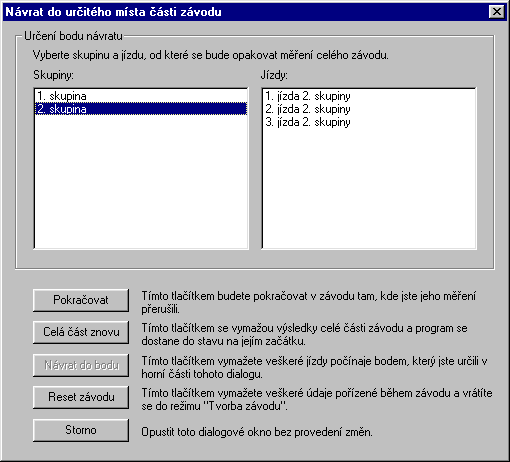

(Comman Race | Reset / return)
In case you encounter certain discrepancies within the race measurement, you may nullify the results in the current race part.
In qualification, you may only reset all the results and start over. In all other race parts, you may choose the point you want to revert to. All the results measured after that point are dismissed. The same dialog appears also when you continue the race measurement if the measurement had been interrupted.
The upper part of the dialog window contains the list of groups which have already driven at least one segment in this part. After you click on a group, the segments that the group has attented, are displayed in the right-hand window. You specify a return point clicking on one of them. Then press the Return to point specified button. The application then returns to the measurement screen and allows you to continue the measurement.
You may repeat the measurement of the whole part (click the Whole part again button) or you may reset the whole race (including all the previous race parts) back into the definition status. Click the Reset the whole race button to do so.